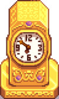
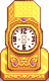

Gold Clock
Jump to navigation
Jump to search
| Gold Clock | |
  | |
| Prevents debris from appearing on your farm. Keeps fences from decaying. | |
| Information | |
| Build cost | |
| Build materials | None |
| Size | 3x2 |
The Gold Clock is a type of building purchasable from the Wizard at the Wizard's Tower after finishing the quest "Goblin Problem".
After placing the Gold Clock, it can be turned on or off.
Constructing the Gold Clock is necessary to achieve Perfection.
Behavior
When placed and turned on, the Gold Clock:
- Prevents debris from appearing on the farm and the Ginger Island farm.
- Grass is not considered debris by the Gold Clock, so it continues to appear randomly.
- Trees no longer randomly appear on the farms, although they can still be manually planted and continue to grow. Existing trees will still randomly drop seeds. Off of the farm, trees continue to sprout automatically as before.
- Green Rain weeds are not considered debris as they are non-destructive and disappear the next day, so they will continue to spawn during green rain.
- Keeps all fences from decaying (including those placed outside the farms), so they never need repair.
- Keeps time with the in-game clock.
When turned off, the Gold Clock's hands are replaced with an image of an hourglass.
Trivia
- The Gold Clock is the most expensive building available to purchase.
History
- 1.1: Introduced.
- 1.5: Requirement for new Perfection mechanic. Also affects Ginger Island farm.
- 1.6.6: Can now turn the Gold Clock on or off.
| Buildings | ||
|---|---|---|
| Merchants | Abandoned House • Adventurer's Guild • Blacksmith • Bookseller • Carpenter's Shop • Casino • Desert Trader • Fish Shop • Giant Stump • Harvey's Clinic • Ice Cream Stand • Island Trader • JojaMart • Marnie's Ranch • Oasis • Pierre's General Store • Qi's Walnut Room • The Stardrop Saloon • Traveling Cart • Volcano Dwarf • Wizard's Tower | |
| Houses | 1 River Road • 2 River Road • 1 Willow Lane • 2 Willow Lane • 24 Mountain Road • Elliott's Cabin • Farmhouse • Island Farmhouse • Leah's Cottage • Mayor's Manor • Tent • Trailer • Treehouse | |
| Farm Buildings | Farming | Barn • Cabin • Coop • Fish Pond • Greenhouse • Mill • Pet Bowl • Shed • Silo • Slime Hutch • Stable • Well |
| Special | Desert Obelisk • Earth Obelisk • Farm Obelisk • Gold Clock • Island Obelisk • Junimo Hut • Water Obelisk | |
| Other Buildings | Community Center • Dog Pen • Island Field Office • Joja Warehouse • Movie Theater • Museum • Spa • Witch's Hut | |